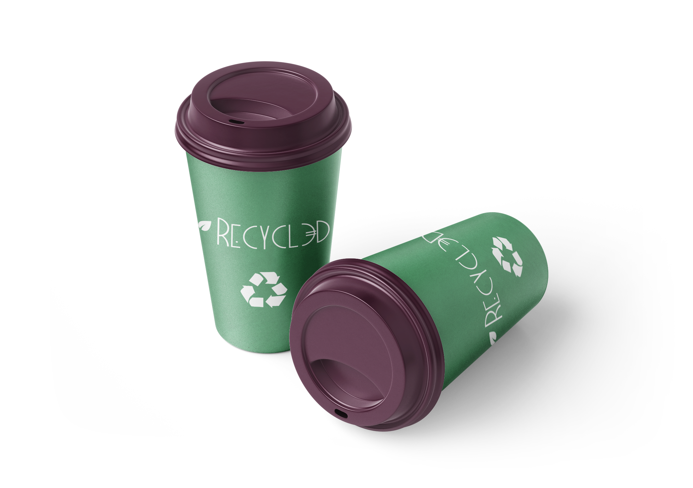

Upcycling
Reutilizando materiales deshechados
para crear nuevos productos artesanales
y nuevos materiales de una mayor
calidad que los originales.
Reutilizando materiales deshechados
para crear nuevos productos artesanales
y nuevos materiales de una mayor
calidad que los originales.
Procesando materiales deshechados
con el objetivo de recuperar la parte
útil de dichos materiales para la
construcción de nuevos productos.